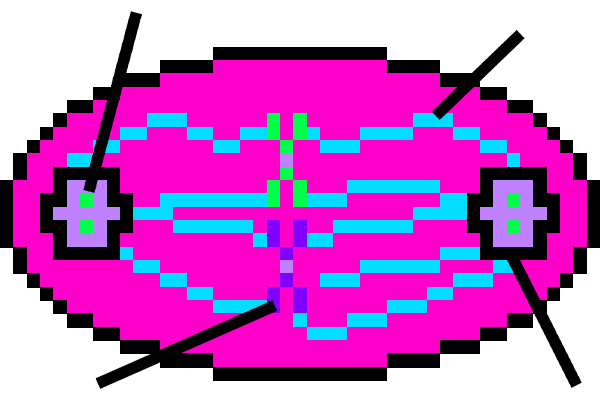

Cell Division Stage 2:
Metaphase
Metaphase is the second stage of mitosis where the chromosomes and
___________,
chromatids
centromeres
microtubules
attach.
In this stage the chromosomes also line up
______________
in the middle
one the left side
of the cell
centrioles microtubules

chromosome centromere